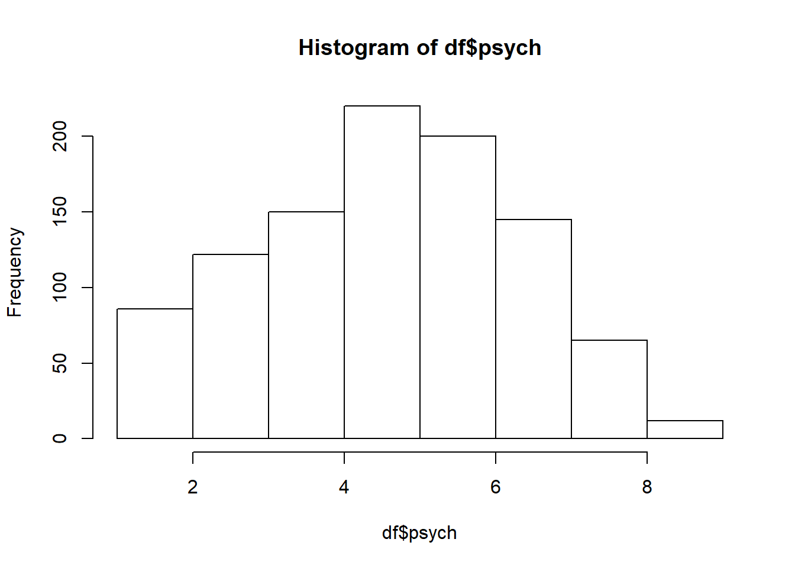

Kapitel 7 Kategorivariabler och tabeller
Det är viktigt vid dataanalys att kunna arbeta med tre moment som involverar tabeller:
- Frekvenstabeller. (dvs en univariat beskrivning av en kategori-variabel)
- Korstabeller i R
- Export av tabeller till HTML (som sedan kan importeras till ordbehandlingsprogram)
Notera att det även finns många paket i R för att skapa tabeller exempelvis summarytools och table1, men vi kommer att arbeta med baspaketen i R. Notera att mycket av nedanstående kod innebär att bygga upp tabeller där olika komponenter är byggstenar som måste passa ihop.
För att exemplifiera tittar vi på ett datamaterial.
# Skapa en population och urval
# Läs in data. Vi ska välja ut födda 1961 och födda 1975.
insark <- read.csv2("D:/conscriptiondata.csv")
# Välja ut insark för födda 1961
insark1 <- insark[insark$year == 1961,]
# Välj ut INSARK för födda 1975 -->
insark2 <- insark[insark$year == 1975,]
# Skapa ett dataset av INSARK 1961 och 1975.
insark3 <- rbind(insark1, insark2)
# Skapa nytt rad id baserat på delpopulationen 1961 och 1975
insark3$newid <- 1:length(insark3$id)
# Dra urval
n <- 1000
set.seed(12345)
df <- insark3[sample(insark3$newid, n), ] 7.0.1 Faktorer på ordinalskala
Variablen psych i INSARK mäter psykisk funktionsförmåga under stressade förhållande på en skala från från 1-9. Värdet är satt av en psykolog och kan betraktas som en variabel på ordinalskala. Därför skapar vi en ny variabel psych_cat som R använder som ordinalskala.
För att skapa en ordinal kategorivariabel används funktionen factor() och i detta fall lägger vi till argumentet ordered = TRUE eftersom det är en kategorivariabel som går att rangordna. Kör nedanstående kod och fundera varför R ger felmeddelanden.
df$psych
> [1] 5 7 3 5 2 6 4 5 5 4 3 6 6 6 5 8 1 4 6 3 8 8 5 5 6 8 6 6 3 2 8 4 7 5 2 5 6
> [38] 9 5 2 5 6 3 4 5 7 2 6 5 5 6 7 2 4 3 5 5 2 4 7 7 5 6 3 5 3 7 6 6 2 5 5 3 3
> [75] 7 3 7 8 6 2 3 5 2 2 6 7 1 6 5 7 7 3 3 6 4 4 6 9 5 7 4 8 6 8 4 6 8 2 7 3 7
> [112] 2 6 6 4 3 6 5 7 3 3 8 5 3 5 5 6 4 5 5 5 7 5 4 6 5 2 2 7 5 4 1 5 6 9 2 3 9
> [149] 3 6 6 7 7 3 3 5 8 4 3 6 6 6 8 3 6 5 7 5 6 4 7 6 4 3 5 5 6 8 1 5 5 7 3 6 3
> [186] 3 4 3 9 5 6 6 4 5 7 3 7 7 6 6 5 7 6 6 5 7 1 5 4 3 8 6 2 7 7 5 3 5 2 7 6 4
> [223] 4 7 5 5 7 3 6 5 6 3 4 4 4 4 3 6 4 5 4 9 5 7 8 7 2 2 3 5 5 6 5 7 4 7 3 4 7
> [260] 4 6 5 4 6 5 5 5 6 2 5 2 8 5 2 6 4 8 6 6 7 5 4 5 7 6 4 2 4 6 6 6 3 4 2 3 4
> [297] 4 3 3 4 7 2 7 6 4 2 7 4 7 6 7 4 4 6 5 5 8 6 5 6 6 3 2 6 5 5 6 6 7 7 6 6 3
> [334] 5 4 3 3 1 5 6 3 4 6 5 2 5 4 5 7 6 8 3 8 3 8 7 6 5 6 6 5 8 6 7 5 8 6 5 4 4
> [371] 3 4 6 7 5 5 7 7 4 8 7 7 6 9 7 6 6 4 8 1 2 6 2 4 4 6 6 5 6 3 1 6 6 6 3 7 7
> [408] 6 6 7 5 6 3 5 5 7 5 7 3 1 5 3 6 6 6 2 8 5 4 7 7 5 5 2 5 5 6 4 3 7 8 4 3 4
> [445] 3 6 8 5 6 5 2 3 7 7 9 6 7 5 3 7 1 8 5 2 5 3 6 3 3 6 5 7 3 3 6 6 5 6 5 3 5
> [482] 5 3 4 4 6 4 3 4 3 6 4 4 5 5 3 5 4 5 7 2 7 8 3 5 6 5 6 5 6 7 6 1 7 5 6 6 4
> [519] 6 7 5 6 4 6 6 2 1 6 8 8 2 4 4 1 5 5 6 5 6 7 5 5 4 3 7 5 4 3 6 4 2 6 6 3 3
> [556] 6 9 6 5 5 5 3 8 4 7 6 5 6 7 6 5 7 6 2 5 3 3 5 5 6 6 6 8 7 5 6 5 1 5 7 7 4
> [593] 5 4 6 7 4 8 6 5 7 3 4 5 4 2 4 5 9 2 7 5 5 4 5 4 4 4 5 7 2 3 5 2 5 5 4 5 4
> [630] 8 3 3 4 7 3 5 9 5 3 4 4 7 9 2 6 4 3 2 7 3 6 5 2 8 5 1 4 5 8 7 5 5 5 5 4 5
> [667] 4 4 5 5 3 7 6 5 6 6 8 4 6 4 4 4 7 6 4 4 6 7 5 4 7 6 3 5 7 4 2 7 8 4 3 4 7
> [704] 6 6 4 3 7 4 5 6 6 8 4 8 4 7 7 8 6 3 7 3 4 5 8 8 7 6 5 2 5 3 5 6 6 7 4 5 5
> [741] 6 4 6 8 2 6 5 7 5 2 5 3 4 8 3 5 5 2 7 5 4 4 7 6 7 8 5 4 1 5 2 3 7 4 2 3 5
> [778] 6 6 8 6 2 5 7 7 8 4 7 6 5 5 2 4 3 7 7 8 6 2 3 5 4 4 4 4 6 8 5 3 2 6 6 5 7
> [815] 8 5 6 5 4 1 5 7 4 6 6 4 8 7 6 7 5 4 7 6 4 4 6 7 2 4 8 5 5 2 2 7 3 5 3 1 5
> [852] 5 4 5 7 5 4 4 4 5 3 5 7 8 7 7 7 7 6 4 6 8 4 5 5 5 5 5 7 3 5 6 7 5 5 8 3 3
> [889] 7 7 6 5 6 6 8 8 2 6 4 5 7 6 4 2 8 7 5 7 6 4 3 3 4 6 4 5 4 3 5 5 5 7 5 5 6
> [926] 5 3 8 6 3 4 3 7 7 8 7 3 6 6 4 4 5 6 2 7 5 3 6 5 6 7 6 5 6 5 7 6 4 7 7 1 3
> [963] 5 7 5 5 3 3 6 4 3 2 6 3 6 6 5 3 4 7 6 5 5 6 5 4 6 6 8 6 2 2 8 7 5 6 4 3 3
> [1000] 4
df$psych_cat <- factor(df$psych, ordered=TRUE)
mean(df$psych)
> [1] 5.062
mean(df$psych_cat)
> Warning in mean.default(df$psych_cat): argument is not numeric or logical:
> returning NA
> [1] NA
hist(df$psych) 
Naturligtvis är det på grund av att vi försöker skapa histogram och medelvärden på psych_cat som inte är en kvantitativ variabel. Titta återigen på ditt dataset. psych_cat är således kategorivariabel (factor) på ordinalskalnivå.
str(df)
> 'data.frame': 1000 obs. of 19 variables:
> $ id : int 703699 692123 702781 692870 689627 25548 393 701579 21052 2848 ...
> $ year : int 1975 1975 1975 1975 1975 1961 1961 1975 1961 1961 ...
> $ height : int 170 189 174 179 183 179 175 168 177 183 ...
> $ weight : int 69 69 60 73 74 71 60 62 69 62 ...
> $ psych : int 5 7 3 5 2 6 4 5 5 4 ...
> $ muscle : int 5 6 6 9 7 6 6 6 4 3 ...
> $ armstrength : num 392 335 404 545 451 ...
> $ physical : int 8 8 6 8 6 7 5 6 7 5 ...
> $ gripstrength: num 554 701 562 693 619 ...
> $ legstrength : num 624 601 633 791 646 ...
> $ sbp : int 118 141 106 121 130 125 124 151 140 126 ...
> $ dbp : int 77 80 63 68 61 55 55 90 78 62 ...
> $ officer : int NA 9 0 9 9 8 0 0 0 0 ...
> $ testa : int 24 35 25 18 25 27 26 30 27 30 ...
> $ testb : int 16 26 24 28 24 20 19 34 26 29 ...
> $ testc : int 5 39 18 23 28 16 12 36 20 16 ...
> $ testd : int 19 0 24 30 25 37 28 34 26 26 ...
> $ newid : int 76440 64864 75522 65611 62368 25548 393 74320 21052 2848 ...
> $ psych_cat : Ord.factor w/ 9 levels "1"<"2"<"3"<"4"<..: 5 7 3 5 2 6 4 5 5 4 ...
df$psych_cat
> [1] 5 7 3 5 2 6 4 5 5 4 3 6 6 6 5 8 1 4 6 3 8 8 5 5 6 8 6 6 3 2 8 4 7 5 2 5 6
> [38] 9 5 2 5 6 3 4 5 7 2 6 5 5 6 7 2 4 3 5 5 2 4 7 7 5 6 3 5 3 7 6 6 2 5 5 3 3
> [75] 7 3 7 8 6 2 3 5 2 2 6 7 1 6 5 7 7 3 3 6 4 4 6 9 5 7 4 8 6 8 4 6 8 2 7 3 7
> [112] 2 6 6 4 3 6 5 7 3 3 8 5 3 5 5 6 4 5 5 5 7 5 4 6 5 2 2 7 5 4 1 5 6 9 2 3 9
> [149] 3 6 6 7 7 3 3 5 8 4 3 6 6 6 8 3 6 5 7 5 6 4 7 6 4 3 5 5 6 8 1 5 5 7 3 6 3
> [186] 3 4 3 9 5 6 6 4 5 7 3 7 7 6 6 5 7 6 6 5 7 1 5 4 3 8 6 2 7 7 5 3 5 2 7 6 4
> [223] 4 7 5 5 7 3 6 5 6 3 4 4 4 4 3 6 4 5 4 9 5 7 8 7 2 2 3 5 5 6 5 7 4 7 3 4 7
> [260] 4 6 5 4 6 5 5 5 6 2 5 2 8 5 2 6 4 8 6 6 7 5 4 5 7 6 4 2 4 6 6 6 3 4 2 3 4
> [297] 4 3 3 4 7 2 7 6 4 2 7 4 7 6 7 4 4 6 5 5 8 6 5 6 6 3 2 6 5 5 6 6 7 7 6 6 3
> [334] 5 4 3 3 1 5 6 3 4 6 5 2 5 4 5 7 6 8 3 8 3 8 7 6 5 6 6 5 8 6 7 5 8 6 5 4 4
> [371] 3 4 6 7 5 5 7 7 4 8 7 7 6 9 7 6 6 4 8 1 2 6 2 4 4 6 6 5 6 3 1 6 6 6 3 7 7
> [408] 6 6 7 5 6 3 5 5 7 5 7 3 1 5 3 6 6 6 2 8 5 4 7 7 5 5 2 5 5 6 4 3 7 8 4 3 4
> [445] 3 6 8 5 6 5 2 3 7 7 9 6 7 5 3 7 1 8 5 2 5 3 6 3 3 6 5 7 3 3 6 6 5 6 5 3 5
> [482] 5 3 4 4 6 4 3 4 3 6 4 4 5 5 3 5 4 5 7 2 7 8 3 5 6 5 6 5 6 7 6 1 7 5 6 6 4
> [519] 6 7 5 6 4 6 6 2 1 6 8 8 2 4 4 1 5 5 6 5 6 7 5 5 4 3 7 5 4 3 6 4 2 6 6 3 3
> [556] 6 9 6 5 5 5 3 8 4 7 6 5 6 7 6 5 7 6 2 5 3 3 5 5 6 6 6 8 7 5 6 5 1 5 7 7 4
> [593] 5 4 6 7 4 8 6 5 7 3 4 5 4 2 4 5 9 2 7 5 5 4 5 4 4 4 5 7 2 3 5 2 5 5 4 5 4
> [630] 8 3 3 4 7 3 5 9 5 3 4 4 7 9 2 6 4 3 2 7 3 6 5 2 8 5 1 4 5 8 7 5 5 5 5 4 5
> [667] 4 4 5 5 3 7 6 5 6 6 8 4 6 4 4 4 7 6 4 4 6 7 5 4 7 6 3 5 7 4 2 7 8 4 3 4 7
> [704] 6 6 4 3 7 4 5 6 6 8 4 8 4 7 7 8 6 3 7 3 4 5 8 8 7 6 5 2 5 3 5 6 6 7 4 5 5
> [741] 6 4 6 8 2 6 5 7 5 2 5 3 4 8 3 5 5 2 7 5 4 4 7 6 7 8 5 4 1 5 2 3 7 4 2 3 5
> [778] 6 6 8 6 2 5 7 7 8 4 7 6 5 5 2 4 3 7 7 8 6 2 3 5 4 4 4 4 6 8 5 3 2 6 6 5 7
> [815] 8 5 6 5 4 1 5 7 4 6 6 4 8 7 6 7 5 4 7 6 4 4 6 7 2 4 8 5 5 2 2 7 3 5 3 1 5
> [852] 5 4 5 7 5 4 4 4 5 3 5 7 8 7 7 7 7 6 4 6 8 4 5 5 5 5 5 7 3 5 6 7 5 5 8 3 3
> [889] 7 7 6 5 6 6 8 8 2 6 4 5 7 6 4 2 8 7 5 7 6 4 3 3 4 6 4 5 4 3 5 5 5 7 5 5 6
> [926] 5 3 8 6 3 4 3 7 7 8 7 3 6 6 4 4 5 6 2 7 5 3 6 5 6 7 6 5 6 5 7 6 4 7 7 1 3
> [963] 5 7 5 5 3 3 6 4 3 2 6 3 6 6 5 3 4 7 6 5 5 6 5 4 6 6 8 6 2 2 8 7 5 6 4 3 3
> [1000] 4
> Levels: 1 < 2 < 3 < 4 < 5 < 6 < 7 < 8 < 9Om variabeln är på ordinalskalenivå. För variabeln psych_cat står Levels: 1 < 2 < 3 < 4 < 5 < 6 < 7 < 8 < 9 som indikerar hur nivåerna är rangordnade. OBS! Trots att det är siffror i variabeln hanteras inte dessa som numeriska värden. Genom att använda funktionen levels() kan vi se vilka nivåer en faktor-variabel har.
# Namn på nivåerna i faktorn psych_cat
levels(df$psych_cat)
> [1] "1" "2" "3" "4" "5" "6" "7" "8" "9"
# Ändra namn på nivåerna i psych_cat
levels(df$psych_cat)[levels(df$psych_cat)=="1"] <- "A"
levels(df$psych_cat)[levels(df$psych_cat)=="2"] <- "B"
levels(df$psych_cat)[levels(df$psych_cat)=="3"] <- "C"
levels(df$psych_cat)[levels(df$psych_cat)=="4"] <- "D"
levels(df$psych_cat)[levels(df$psych_cat)=="5"] <- "E"
levels(df$psych_cat)[levels(df$psych_cat)=="6"] <- "F"
levels(df$psych_cat)[levels(df$psych_cat)=="7"] <- "G"
levels(df$psych_cat)[levels(df$psych_cat)=="8"] <- "H"
levels(df$psych_cat)[levels(df$psych_cat)=="9"] <- "I"
levels(df$psych_cat)
> [1] "A" "B" "C" "D" "E" "F" "G" "H" "I"
str(df$psych_cat)
> Ord.factor w/ 9 levels "A"<"B"<"C"<"D"<..: 5 7 3 5 2 6 4 5 5 4 ...För att ändra rangordningen används funktionen ordered() och argumentet levels, där namnen på nivåerna placeras i en vektor som anger den rangordning nivåerna ska ha.
df$psych_cat <- ordered(df$psych_cat, levels=c("I", "H", "G", "F", "E", "D", "C", "B", "A"))
str(df$psych_cat)
> Ord.factor w/ 9 levels "I"<"H"<"G"<"F"<..: 5 3 7 5 8 4 6 5 5 6 ...I exemplet vänds rangordningen, men det går att ordna nivåerna i vilken ordning som helst.